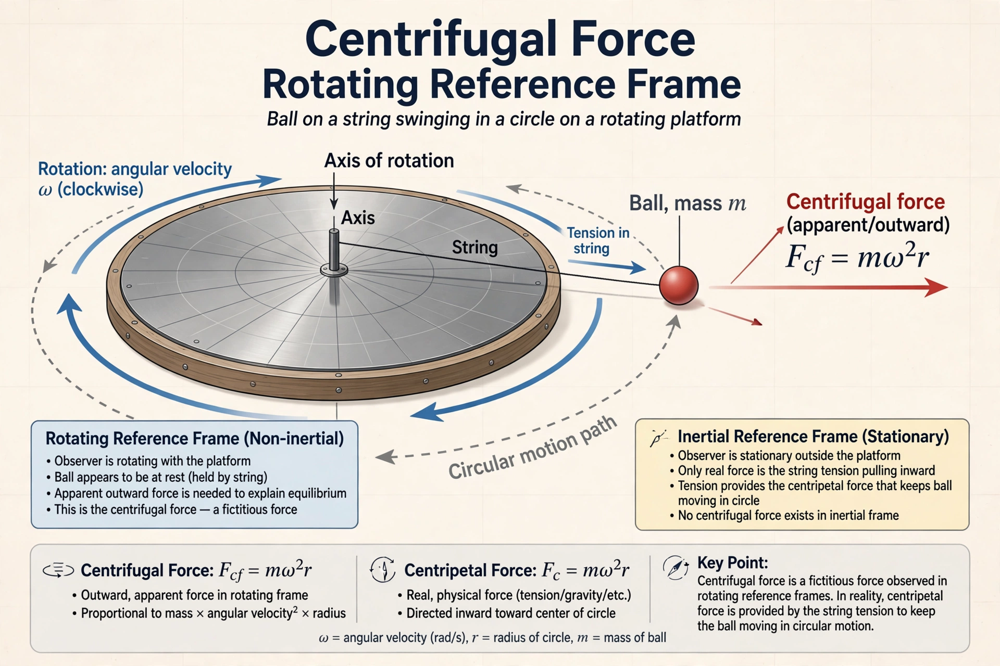

Centrifugal force is an inertial (fictitious or pseudo) force that appears to act on objects when viewed in a rotating frame of reference. It is directed away from the axis of rotation, with magnitude mω²r, where m is mass, ω angular velocity and r distance from the axis.

In an inertial frame, a body moving in a circle is accelerating toward the centre — centripetal acceleration — and no outward force is needed. In the rotating frame, the body appears at rest, so an outward centrifugal term is introduced to make Newton's laws work in that frame, balanced for example by tension or friction.
Centrifugal effects explain the equatorial bulge of the Earth, the operation of centrifuges and centrifugal governors, the sensation of being pushed outward in a turning car, and artificial gravity proposals for rotating space stations. The related Coriolis force acts on moving bodies in rotating frames.
Huygens and Newton analysed circular motion in the 17th century; the term derives from Latin centrum and fugere, to flee the centre.